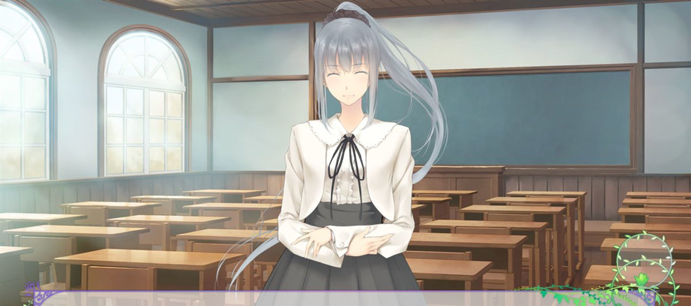
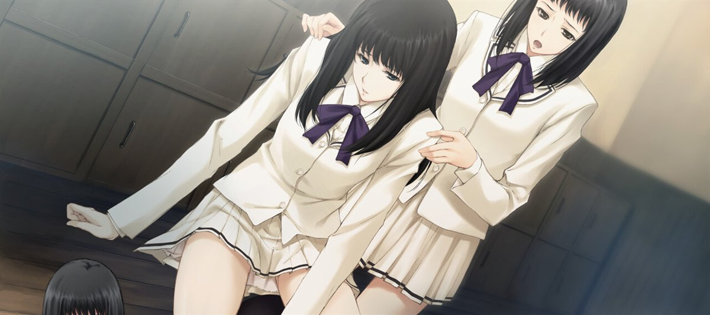
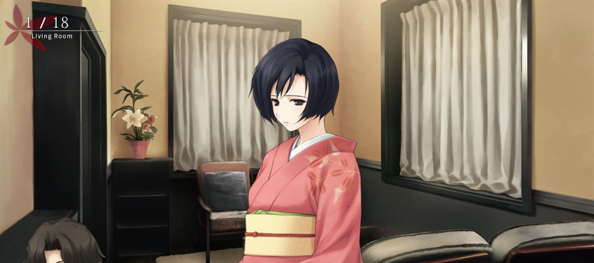
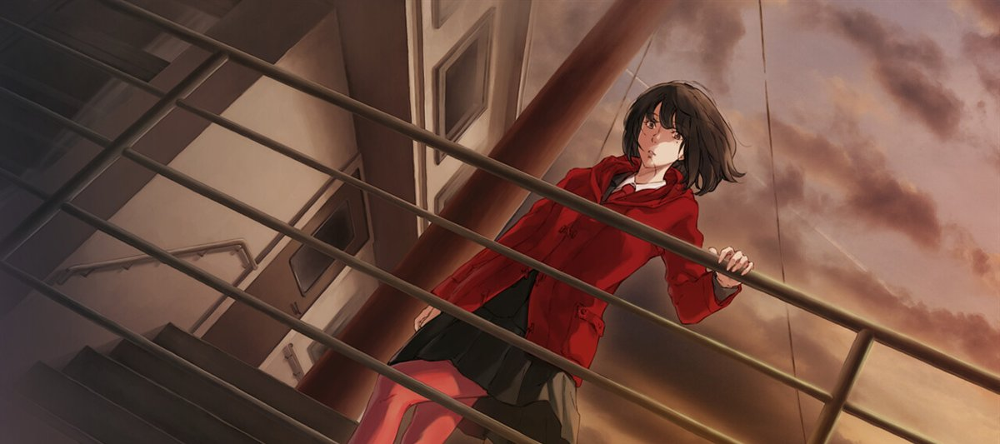
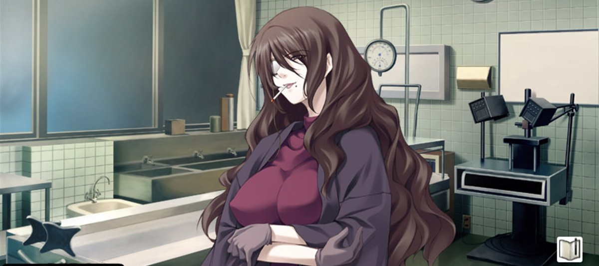
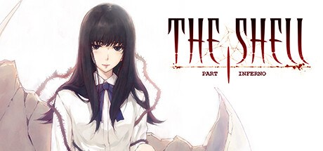
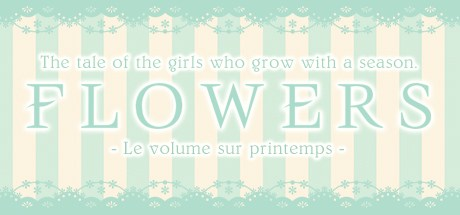
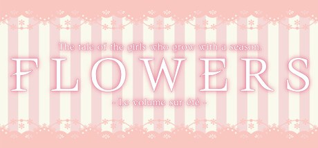
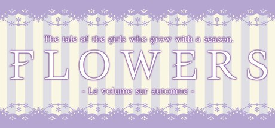
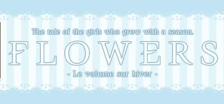

关于
原画爱好者 / 业余考据党
你好，我是 Azure。这里收拢杉菜水姫（すぎな みき）与 Innocent Grey 的美术素材： 原画截取、配色与构图的整理笔记，以及作品与海外移植版的动向。
站名里的 Azure 取自《殻ノ少女》的原声集《AZURE》；而 Innocent Grey 这个名字， 按杉菜本人的解释是「纯粹的灰色」——既不是黑也不是白，所以既能写暗色的故事，也能写明亮的故事。 这个资料室想同时记下这两面。
给我写封信素材橱窗
从画廊里挑了六张。点击可以放大，完整清单在画廊页。
FLOWERS 冬篇
进入画廊（20 张）

FLOWERS 秋篇
The Shell Part I
和服与灯影
红色楼梯间
殻ノ少女作品
原画全部出自杉菜水姫之手，这里是各作的官方标题图与发售时间。
CARTAGRA カルタグラ〜ツキ狂イノ病〜
品牌首作，昭和背景的悬疑故事
殻ノ少女
系列起点，英文版由 MangaGamer 发行

The Shell Part I: Inferno 《殻ノ少女》重制版，Shiravune 发行
The Shell Part II: Purgatorio
即《虚ノ少女》（2013.02.08）
The Shell Part III: Paradiso
即《天ノ少女》（2020.12.25）

FLOWERS 春篇 全年龄向系列，以「スギナミキ」名义署名
FLOWERS 夏篇 春篇的延续，舞台转入夏季的学院
FLOWERS 秋篇 秋色最浓的一部，教室光线是重点
FLOWERS 冬篇 四部曲收束，蓝与白的收尾